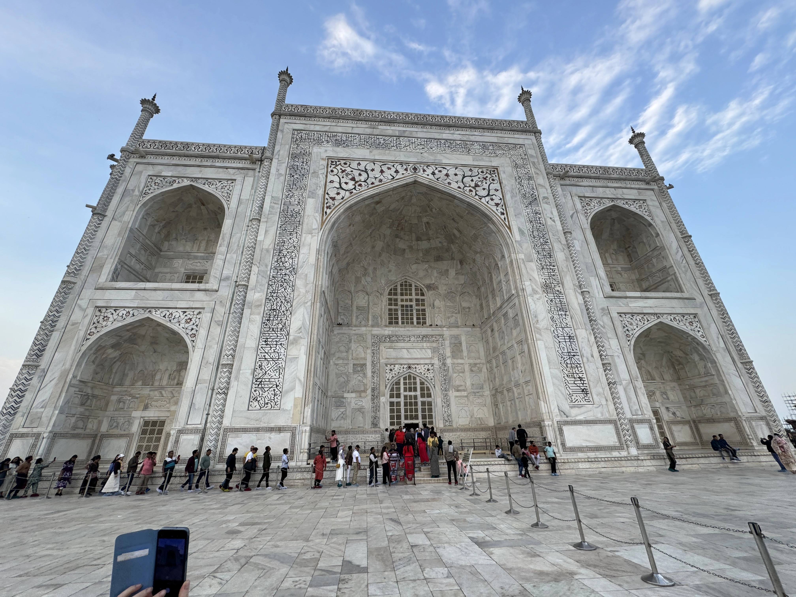
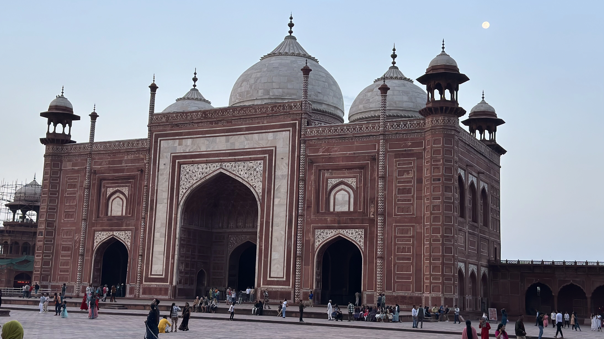
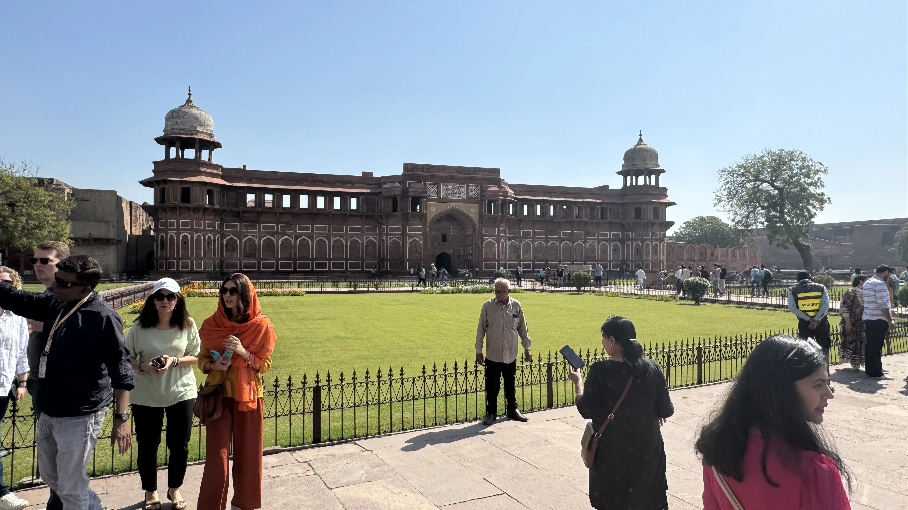
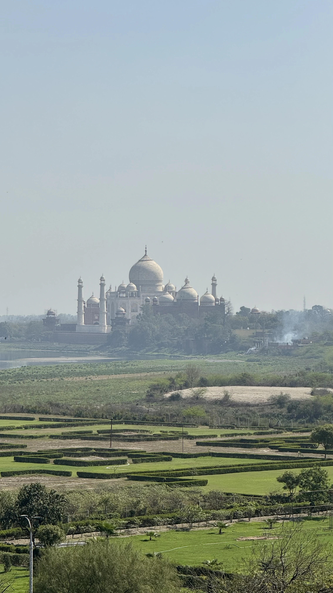

Découverte d'Agra : Un Voyage à Travers le Temps
Histoire d'Agra
Agra, une ville légendaire située dans l'État de l'Uttar Pradesh, est une véritable perle de l'histoire indienne. Fondée au début du 16ème siècle par Sultan Sikandar Lodi, Agra a atteint son apogée sous l'empire moghol, devenant la capitale culturelle et politique de l'Inde. Les empereurs moghols, Akbar, Jahangir et Shah Jahan, ont chacun contribué à la transformation de cette ville en un centre mondial de l'art, de l'architecture et de la culture. Sous leur règne, Agra a vu l'édification de monuments majestueux qui sont aujourd'hui des symboles de la grandeur et de la splendeur de l'Inde ancienne.
Économie d'Agra
L'économie d'Agra est diversifiée et dynamique, reposant sur plusieurs secteurs clés. Le tourisme est le principal moteur économique, attirant des millions de visiteurs nationaux et internationaux chaque année. Cette affluence touristique stimule l'industrie hôtelière, la restauration et le commerce local.
L'artisanat est également une composante essentielle de l'économie d'Agra. La ville est réputée pour ses travaux en marbre incrusté de pierres précieuses, une technique héritée de l'époque moghole, ainsi que pour ses tapis tissés à la main, ses bijoux et ses textiles brodés.
Agra possède également une importante industrie manufacturière, notamment la production de cuir, qui est exporté à l'international, et une industrie de la chaussure florissante. De plus, Agra est un centre commercial et de transport crucial, bénéficiant de sa proximité avec la capitale indienne, New Delhi.
Architecture d'Agra
Le Taj Mahal
Le Taj Mahal, joyau de l'architecture moghole, est sans doute le monument le plus emblématique d'Agra. Construit par l'empereur Shah Jahan en mémoire de son épouse bien-aimée Mumtaz Mahal, ce mausolée en marbre blanc est une merveille architecturale et un symbole d'amour éternel. Son dôme central imposant, ses minarets élégants et ses jardins magnifiquement aménagés attirent des millions de visiteurs chaque année. Le Taj Mahal change de couleur au fil de la journée, passant du rose délicat à l'aube au blanc éblouissant à midi, pour prendre des reflets dorés au coucher du soleil, offrant ainsi une expérience visuelle inoubliable.
Le Fort d'Agra
Le Fort d'Agra, une imposante forteresse en grès rouge, est un autre chef-d'œuvre de l'architecture moghole. Classé au patrimoine mondial de l'UNESCO, ce fort a servi de résidence impériale et de centre administratif sous le règne d'Akbar. À l'intérieur, vous découvrirez une série de palais, de salles d'audience et de mosquées, dont la somptueuse Jahangir Mahal et la splendide Pearl Mosque. Les murs massifs du fort offrent également des vues spectaculaires sur le Taj Mahal.
Fatehpur Sikri
Située à une quarantaine de kilomètres d'Agra, Fatehpur Sikri est une ancienne capitale moghole fondée par l'empereur Akbar. Cette ville abandonnée est un exemple remarquable de l'architecture indo-islamique. Parmi ses monuments les plus célèbres, on trouve le Panch Mahal, un palais à cinq étages, et la Jama Masjid, une mosquée grandiose. Fatehpur Sikri est également connue pour son Buland Darwaza, la plus grande porte d'entrée du monde, symbolisant la grandeur de l'empire moghol.
Agra et le Tourisme
Attractions Principales
Outre le Taj Mahal, le Fort d'Agra et Fatehpur Sikri, Agra offre de nombreuses autres attractions touristiques. La tombe d'Itimad-ud-Daulah, souvent appelée le "Mini Taj", est un magnifique mausolée en marbre blanc qui préfigure le style du Taj Mahal. Le jardin de Mehtab Bagh, situé en face du Taj Mahal de l'autre côté de la rivière Yamuna, offre une vue imprenable sur le mausolée, surtout au coucher du soleil.
Expériences Culinaires
La cuisine d'Agra est une autre attraction incontournable. La ville est célèbre pour ses plats moghols comme le biryani, le kebab et le korma. Les gourmands ne manqueront pas de déguster le petha, une confiserie locale à base de citrouille, et le dalmoth, un mélange épicé de lentilles et de noix. Les marchés animés de Sadar Bazaar et Kinari Bazaar sont des lieux idéaux pour goûter à ces délices.
Festivals et Événements
Agra est également une ville de festivals. Le Taj Mahotsav, un festival annuel qui se tient en février, célèbre l'art, la culture et la cuisine indienne avec des spectacles de danse, de musique et des expositions artisanales. Holi, le festival des couleurs, et Diwali, le festival des lumières, sont également célébrés avec beaucoup d'enthousiasme et d'éclat.
Vous souhaitez plus d'informations
N'hesitez à nous contacter pour plus de renseignements sur nos services, nous sommes à votre ecoute pour faire de ce voyage un moment inoubliable
Agra en Quelques Chiffres
- Population : Environ 1,6 million d'habitants
- Nombre de visiteurs annuels : Plus de 8 millions
- Superficie : Environ 188 km²
- Altitude : 171 mètres au-dessus du niveau de la mer
- Guide en direct : anglais, français, espagnol, allemand, italien, russe
- Distance de New Delhi : 210 km
- Température moyenne annuelle : 25°C
Les 10 Incontournables d'Agra
- 1. Le Taj Mahal
Chef-d'œuvre mondialement connu, ce mausolée de marbre blanc est un symbole d'amour éternel, construit par l'empereur Shah Jahan en mémoire de son épouse Mumtaz Mahal. - 2. Le Fort d'Agra
Imposante forteresse en grès rouge, classée au patrimoine mondial de l'UNESCO. C'était la résidence impériale et le centre administratif sous les Moghols - 3. Tombe de Itimad-ud-Daulah
Surnommé le "Mini Taj", ce mausolée en marbre blanc préfigure le style du Taj Mahal. Il est décoré de motifs floraux et de mosaïques. - 4. Mehtab Bagh
Jardin situé en face du Taj Mahal, de l'autre côté de la rivière Yamuna. Il offre une vue imprenable sur le mausolée, surtout au coucher du soleil. - 5. Jama Masjid
Grande mosquée construite par Shah Jahan en 1648, située près de l'entrée du Fort d'Agra. C'est un exemple impressionnant de l'architecture moghole. - 6. Chini ka Rauza
Mausolée de l'un des premiers ministres de Shah Jahan, Afzal Khan. Il est célèbre pour ses mosaïques de céramique (chini) uniques. - 7. Marchés et Bazaars
Sadar Bazaar : Marché animé où vous pouvez acheter des souvenirs, de l'artisanat local, des vêtements et des épices. Kinari Bazaar : Connu pour ses bijoux, ses textiles et ses articles en cuir. - 8. Sikandra
Tombeau de l'empereur Akbar, situé à environ 10 km d'Agra. C'est un mélange unique de styles architecturaux hindous, chrétiens, islamiques, bouddhistes et jaïns. - 9. Jardin de Soami Bagh
Lieu de repos du fondateur de la secte Radha Soami, le jardin est paisible et le bâtiment principal est orné de sculptures élaborées. - 10. Musée et Galerie d'Art d'Agra
Situé dans le jardin Paliwal Park, ce musée offre un aperçu de l'histoire, de l'art et de la culture d'Agra à travers diverses expositions.